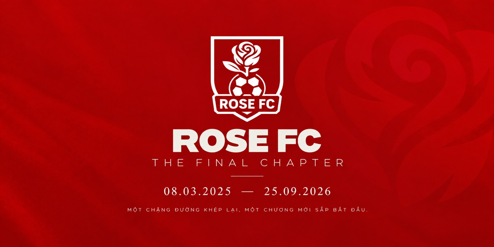

ROSE FC — THE FINAL CHAPTER
Sau 1 năm, 6 tháng và 17 ngày, kể từ ngày 08/03/2025, Rose Football Club chính thức khép lại giai đoạn hoạt động dưới tên gọi Rose FC vào ngày 25/09/2026.

Thông báo chính thức · Rose Football Club · 25.09.2026
Quyết định này đánh dấu sự kết thúc của một giai đoạn phát triển, đồng thời mở đầu cho quá trình chuyển giao, tái cấu trúc và xây dựng một đội bóng mới trên những nền tảng mà Rose FC đã tạo dựng.
Vì sao Rose FC bước sang một chương mới?
Trong quá trình hoạt động, Rose FC đã từng bước xây dựng được hệ thống tổ chức, nhận diện riêng, lực lượng cầu thủ, hoạt động thi đấu và những nền tảng phục vụ cho định hướng phát triển lâu dài.
Tuy nhiên, cùng với những mục tiêu lớn hơn trong giai đoạn tiếp theo, mô hình hiện tại của Rose FC cũng đã bộc lộ những giới hạn về cơ cấu nhân sự, phương thức vận hành, tính ổn định của lực lượng và khả năng đáp ứng định hướng thi đấu trong tương lai.
Sau quá trình đánh giá lại toàn bộ hoạt động, CLB xác định rằng việc chỉ tiếp tục duy trì Rose FC theo mô hình cũ sẽ không còn phù hợp với định hướng phát triển tiếp theo. Vì vậy, thay vì tiếp tục điều chỉnh từng phần, một quá trình tái cấu trúc sâu hơn đã được lựa chọn.
Không phải giải thể — mà là chuyển giao
Ngày 25/09/2026 đánh dấu thời điểm Rose FC hoàn thành sứ mệnh của mình dưới tên gọi hiện tại. Điều này không đồng nghĩa với việc toàn bộ những gì thuộc về Rose FC sẽ chấm dứt.
Những nền tảng phù hợp đã được xây dựng trong thời gian qua sẽ được chuyển giao, kế thừa và phát triển trong chương tiếp theo. Đồng thời, đội bóng bước vào quá trình xây dựng lại về nhân sự, cơ cấu vận hành, hình ảnh và định hướng phát triển.
Một phần lực lượng cũ có thể tiếp tục đồng hành, song đội bóng trong giai đoạn mới sẽ được hình thành trên một cơ cấu nhân sự mới và không đơn thuần là việc thay đổi tên gọi hay nhận diện của Rose FC.
Mục tiêu của giai đoạn mới
Quá trình chuyển giao hướng đến việc xây dựng một tập thể có cơ cấu rõ ràng hơn, lực lượng ổn định hơn và phương thức vận hành phù hợp hơn với các mục tiêu thi đấu dài hạn.
Đội bóng mới sẽ tiếp tục phát triển từ những kinh nghiệm đã có, đồng thời xây dựng một bản sắc và hệ thống hoạt động riêng cho chặng đường tiếp theo.
Các nền tảng như Roseball và Roseball Forward vẫn được duy trì như một phần những giá trị được kế thừa từ Rose FC.
01.10.2026
Trong thời gian từ 25/09 đến 30/09/2026, các nền tảng truyền thông và hệ thống hoạt động sẽ từng bước được chuẩn bị cho quá trình chuyển đổi. Tên gọi, nhận diện và những thông tin đầu tiên về đội bóng trong chương tiếp theo dự kiến sẽ chính thức được công bố vào ngày 01/10/2026.
Cho đến thời điểm công bố chính thức, Rose FC sẽ chưa tiết lộ tên gọi hoặc nhận diện của đội bóng mới.
Ngày 25/09 khép lại một chương. Ngày 01/10, chúng ta sẽ bắt đầu kể câu chuyện tiếp theo.
THE FINAL CHAPTER.
The next chapter begins soon.